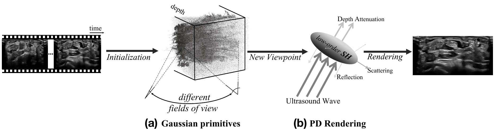
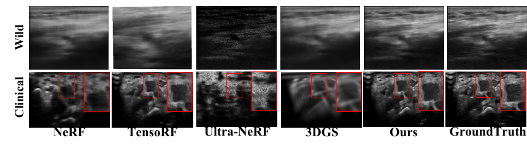
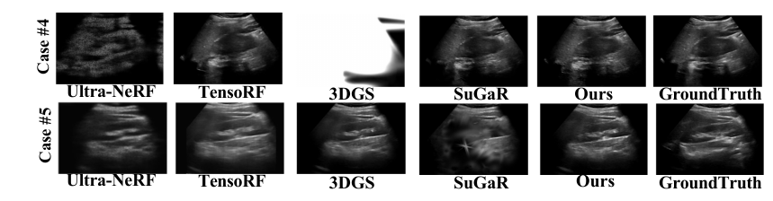
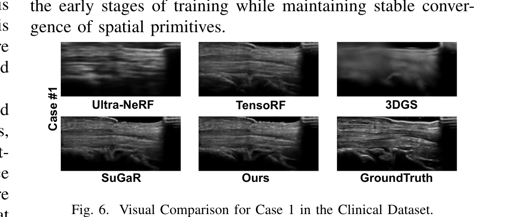
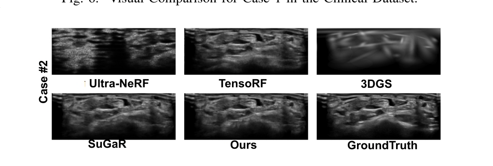
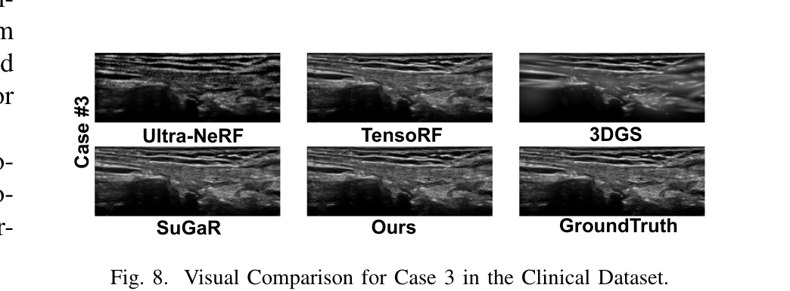
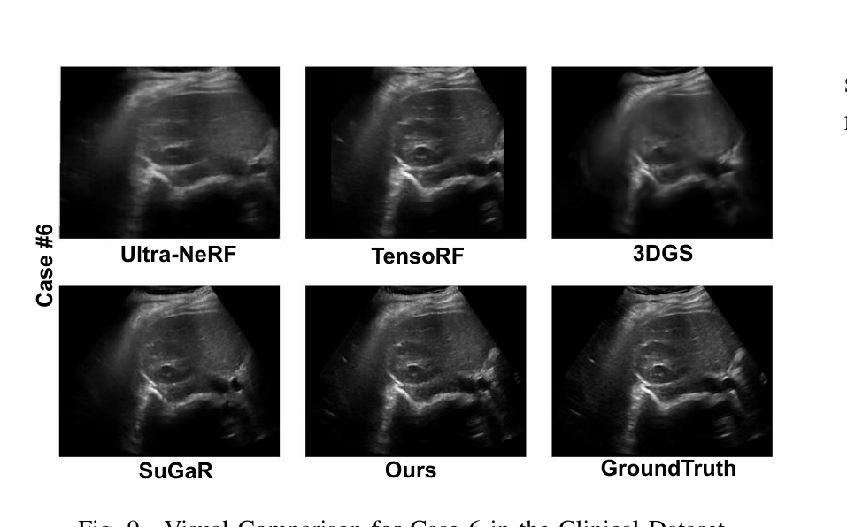
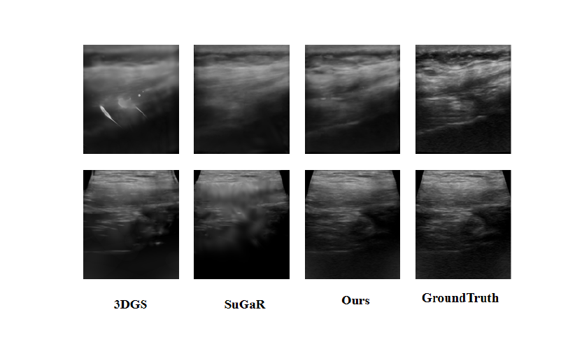
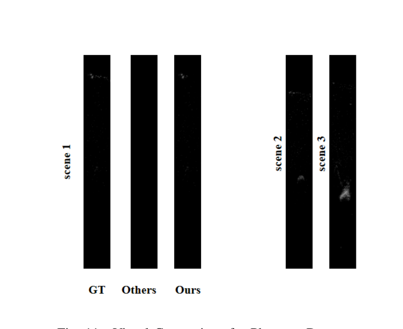
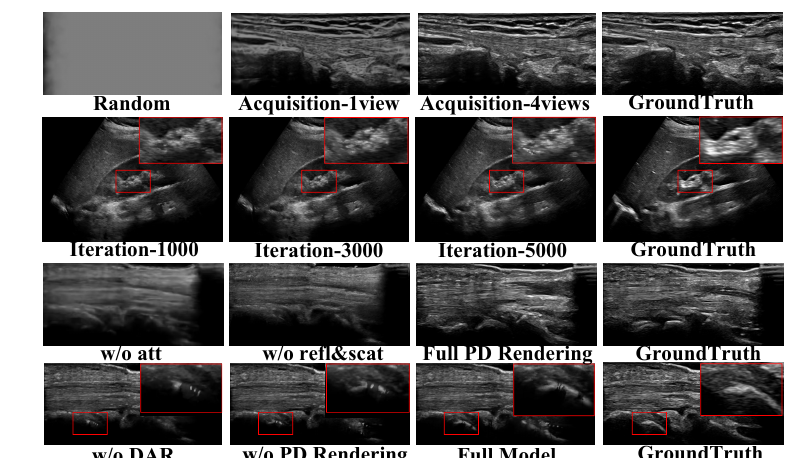

ICME 2026
1Anhui University · 2Xinhua Hospital, Shanghai Jiao Tong University School of Medicine
3Nankai University · 4Anhui University of Science & Technology
† Corresponding author
Ultrasound imaging is a cornerstone of non-invasive clinical diagnostics, yet its limited field of view poses challenges for novel view synthesis. We present UltraGS, a real-time framework that adapts Gaussian Splatting to sensorless ultrasound imaging by integrating explicit radiance fields with lightweight, physics-inspired acoustic modeling. UltraGS employs depth-aware Gaussian primitives with learnable fields of view to improve geometric consistency under unconstrained probe motion, and introduces PD Rendering, a differentiable acoustic operator that combines low-order spherical harmonics with first-order wave effects for efficient intensity synthesis. We further present a clinical ultrasound dataset acquired under real-world scanning protocols. Extensive evaluations across three datasets demonstrate that UltraGS establishes a new performance-efficiency frontier, achieving state-of-the-art results in PSNR (up to 29.55) and SSIM (up to 0.89) while achieving real-time synthesis at 64.69 fps on a single GPU. The code and dataset are open-sourced at: https://github.com/Bean-Young/UltraGS.

| Method | Wild Dataset | Phantom Dataset | Speed (fps) ↑ | ||||
|---|---|---|---|---|---|---|---|
| PSNR ↑ | SSIM ↑ | MSE ↓ | PSNR ↑ | SSIM ↑ | MSE ↓ | ||
| NeRF | 20.176 | 0.6834 | 0.0066 | 20.359 | 0.6301 | 0.0058 | 0.28 |
| TensoRF | 24.058 | 0.7528 | 0.0051 | 27.260 | 0.7178 | 0.0029 | 1.61 |
| Ultra-NeRF | 19.140 | 0.6218 | 0.0109 | 25.115 | 0.6814 | 0.0042 | 0.43 |
| 3DGS | 22.327 | 0.7745 | 0.0057 | 27.115 | 0.7142 | 0.0031 | 52.56 |
| SuGaR | 21.392 | 0.6291 | 0.0159 | 28.899 | 0.8843 | 0.0024 | 9.81 |
| Ours | 25.454 | 0.7969 | 0.0043 | 29.550 | 0.8966 | 0.0020 | 64.69 |
Quantitative comparison on Wild and Phantom datasets. Speed measured on a single NVIDIA RTX 3090.

| Method | Wild Dataset | Phantom Dataset | Speed (fps) ↑ | ||||
|---|---|---|---|---|---|---|---|
| PSNR ↑ | SSIM ↑ | MSE ↓ | PSNR ↑ | SSIM ↑ | MSE ↓ | ||
| NeRF | 20.176 | 0.6834 | 0.0066 | 20.359 | 0.6301 | 0.0058 | 0.28 |
| TensoRF | 24.058 | 0.7528 | 0.0051 | 27.260 | 0.7178 | 0.0029 | 1.61 |
| Ultra-NeRF | 19.140 | 0.6218 | 0.0109 | 25.115 | 0.6814 | 0.0042 | 0.43 |
| 3DGS | 22.327 | 0.7745 | 0.0057 | 27.115 | 0.7142 | 0.0031 | 52.56 |
| SuGaR | 21.392 | 0.6291 | 0.0159 | 28.899 | 0.8843 | 0.0024 | 9.81 |
| Ours | 25.454 | 0.7969 | 0.0043 | 29.550 | 0.8966 | 0.0020 | 64.69 |
Quantitative comparison on Wild and Phantom datasets. Speed measured on a single NVIDIA RTX 3090.
| Method | Case 1 | Case 2 | Case 3 | Case 4 | Case 5 | Case 6 | ||||||
|---|---|---|---|---|---|---|---|---|---|---|---|---|
| PSNR ↑ | SSIM ↑ | PSNR ↑ | SSIM ↑ | PSNR ↑ | SSIM ↑ | PSNR ↑ | SSIM ↑ | PSNR ↑ | SSIM ↑ | PSNR ↑ | SSIM ↑ | |
| NeRF | 18.282 | 0.3388 | 21.880 | 0.5363 | 17.329 | 0.3835 | 23.119 | 0.5985 | 21.634 | 0.5980 | 25.376 | 0.6660 |
| TensoRF | 17.206 | 0.3593 | 22.787 | 0.6378 | 19.999 | 0.5124 | 22.681 | 0.5692 | 22.252 | 0.6816 | 26.158 | 0.7389 |
| Ultra-NeRF | 17.661 | 0.2404 | 18.194 | 0.3994 | 19.030 | 0.3335 | 19.053 | 0.4331 | 20.648 | 0.4971 | 22.450 | 0.7030 |
| 3DGS | 17.280 | 0.4270 | 20.367 | 0.5510 | 18.524 | 0.4420 | 21.807 | 0.6673 | 22.110 | 0.6773 | 25.927 | 0.7333 |
| SuGaR | 18.170 | 0.4601 | 23.831 | 0.7085 | 20.902 | 0.5128 | 23.541 | 0.6381 | 20.135 | 0.5923 | 27.264 | 0.7721 |
| Ours | 18.846 | 0.4978 | 24.644 | 0.7380 | 21.570 | 0.5493 | 24.030 | 0.6719 | 22.723 | 0.6911 | 28.181 | 0.7888 |
Quantitative comparison on the Clinical Dataset.







| Variant | Wild Dataset | Phantom Dataset | ||
|---|---|---|---|---|
| PSNR ↑ | SSIM ↑ | PSNR ↑ | SSIM ↑ | |
| w/o Attenuation | 24.115 | 0.7732 | 28.230 | 0.8641 |
| w/o Reflection & Scattering | 24.380 | 0.7801 | 28.512 | 0.8715 |
| w/o DAR | 23.422 | 0.7520 | 27.105 | 0.8500 |
| w/o PD Rendering | 23.887 | 0.7610 | 27.451 | 0.8320 |
| Ours (Full model) | 25.454 | 0.7969 | 29.550 | 0.8966 |
Ablation study on module removal.

@inproceedings{yang2026ultrags,
title={UltraGS: Real-Time Physically-Decoupled Gaussian Splatting for Ultrasound Novel View Synthesis},
author={Yang, Yuezhe and Ruan, Qingqing and Cai, Wenjie and Dong, Yufang and Yang, Dexin and Dong, Xingbo and Jin, Zhe and Dai, Yong},
booktitle={IEEE International Conference on Multimedia and Expo (ICME)},
year={2026},
url={https://arxiv.org/abs/2511.07743v3}
}